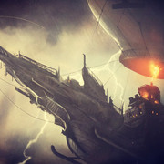
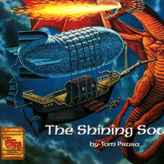
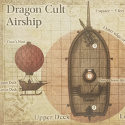

加盟公司有机会得到一种本章节介绍的独特载具。当然了，有时是被敌人得到拿来攻击你们。这两种载具皆由总公司制作与租借。价格有时甚至很合理。
浮空战船1
杳无人烟的山峰上，一座城堡静静屹立。你站在城堡上，透过冬日的铅云看到一个怪物般的影子，你无法相信自己的眼睛，不可能会有这么大的东西飞在天上！
就算是总公司，也没有很多浮空战船。一般来说，公司舰队最多会有五艘。这种载具所拥有的无以伦比的实用性，让它在生意场上（或战斗中）所向无敌。因此也成了所有加盟公司最梦寐以求的东西。
起源与操作 商业保密条令和复杂的市场变动，让人很难搞清楚飞船到底起源于何处。有些人认为这最早是由前端奥术研究所与艾奎兹玄有限责任公司开发部共同设计的②。但哈鲁阿的巫师们在很久以前就开发出了相似的飞船3；而拜龙教的空中载具也广为人知④。尽管本公司的飞船不是最早出现的，但依然是空中最令人闻风丧胆的对象。哈鲁阿的法师和拜龙教的教徒也绝对没胆量把桶装机器人招上船，更不要说直接用船把一头暴龙压扁了。
突出一个会飞 本公司飞船的标志性要素是由绳网罩住的巨型气球。几条拖曳绳索将气球与下方的船体牢牢固定在一起。在气球的正下方，甲板的正中央坐落着一个巨型魔法燃烧器。这个燃烧器提供的升力太过夸张，以至于有传言说里面困着元素生物。船长控制着魔法燃烧器, 并通过船头的舵控制船尾的螺旋桨决定前进的方向。飞船底部的金属滑条让它可以降落在地上。
个性化与武器 每个组织的飞船都有不同进攻能力。但主要还是采用大量鱼叉炮，以方便空中迎敌并控制住敌人，拉近敌人的距离进行接舷战。身经百战的浮空战船也早就准备好了远距离武器和长杆兵器。
你的飞船不管是自费购买还是租借，都可以对设施进行个性化改造。你可以尝试不同的攻城武器，起重设备与装卸设备，以及更多独特的设施来让你的船变得独一无二。不管怎样，本公司最强大也是最多船只会配置的装备是绿焰弩炮。这是一个连螺丝都不断散发魔法脉冲的巨型弩炮。所到之处，寸草不生。
你的可移动的公司总部 在加盟公司选择他们的总部时，浮空战船总是最吃香的那个。飞船的用途十分广泛，你既可以用它来运输货物,雇佣兵,战利品，也可以用它从一些烫手的交易里脱身。
铅云号
铅云号是艾奎兹玄有限责任公司的旗舰。正因如此，它配得上一篇旁注。这首伟大的浮空战船上的武器多如牛毛，船头甚至有一支猎龙长矛，而且看起来用过不止一次。铅云号历经百战，任然屹立风中。但流传下来的不仅仅是它的功绩，也有挥之不去的传言。这艘船的动力是不是靠抓来的火巨灵提供的？船舱里是不是有着所有公司高层的克隆体，包括CEO欧米・德兰本人？厨房里是不是有着一位幽灵大厨？所有问题的答案都在那甲板之下，等待着幸运儿前来发现。
载具规则
浮空战船与眼魔型动力飞船作为载具有着独特的规则。简单来说，载具同样拥有六项属性值和调整值。载具的力量决定了它的尺寸和重量，载具的敏捷决定了它控制的难度，载具的体质决定了它的耐久与设备的质量，载具的智力,感知,魅力通常为零。当载具某种属性值为零时，对应的判定自动判负。载具的具体构成与回合动作见下。
浮空战船
超巨型载具 （
80ft. x 20ft.）
乘客容量
20位船员，10位乘客
载货量
1t
旅行速度 9里/小时（216里/天）
力量18（+4） 敏捷17（+3） 体质20（+5）
智力0 感知0 魅力0
伤害免疫：毒素，心灵
状态免疫：目盲，魅惑，耳聋，力竭，恐慌，麻痹，
石化，中毒，倒地，震慑，昏迷
动作
当浮空战船有20或20个以上船员时，每回合可使用3个动作。
当浮空战船有10或10个以上船员时，每回合可使用2个动作。
当浮空战船不满10个船员时，每回合可使用1个动作。
当浮空战船没有船员时，每回合可使用0个动作。
发射鱼叉炮 浮空战船可以发射它的鱼叉炮
发射绿焰弩炮 浮空战船可以发射它的绿焰弩炮
移动 浮空战船可使用船头的舵控制螺旋桨进行移动。
当浮空战船进入巨型或巨型以下生物所占据的空间时，
自动将该生物推至浮动战船的边缘。该生物必须进行敏捷豁免（DC15）,
失败将受到5（1d10）点钝击伤害。
拖曳鱼叉 浮空战船可以将每个叉到的目标拉近至多30尺。
船体
AC 15
HP 200（最低可受伤害15）5
控制系统：船舵
AC 18
HP 50
移动取决于船尾的螺旋桨，船舵如果被摧毁，船将无法转向。
控制系统：气球
AC 12
HP 75
如果气球被摧毁，浮空战船将立刻坠落。
移动系统：螺旋桨
AC 12
HP 100 每损失25点hp减低5尺速度。
速度（空中） 80尺；逆风50尺，顺风100尺。
武器：绿焰弩炮
AC 15
HP 75
远程武器攻击：命中+8，触及200/800尺（无法击中60尺范围内的目标），单一目标。
伤害：16（3d10）点穿刺伤害 和
22（4d10）点火焰伤害。若未命中，由DM决定弩炮落点。
每个在落点半径10尺范围内的生物进行敏捷豁免（DC15），
失败者受到5（1d10）点穿刺伤害和5（1d10）点火焰伤害。
武器：鱼叉炮（3台）
AC 15
HP 50
远程武器攻击：命中+8，触及120/480尺，单一目标。
伤害：11（2d10）点穿刺伤害，并且鱼叉勾进目标（挣脱DC 16）。
当目标被鱼叉勾住时，速度减半，并且无法进行远离浮空飞船的移动。
三台鱼叉炮可以各自勾住一个目标。
浮空战船的速度不受鱼叉炮影响。
1：
浮空战船
②：原文Heuristic Arcane Research and Development department of Acquisitions
Incorporated
3：
哈鲁阿的飞船
④：
拜龙教的飞船
模组SKT第三章中有对拜龙教飞船详细的解释。
5：原文damage
threshold 15. 低于15点的伤害无法减少船体HP。